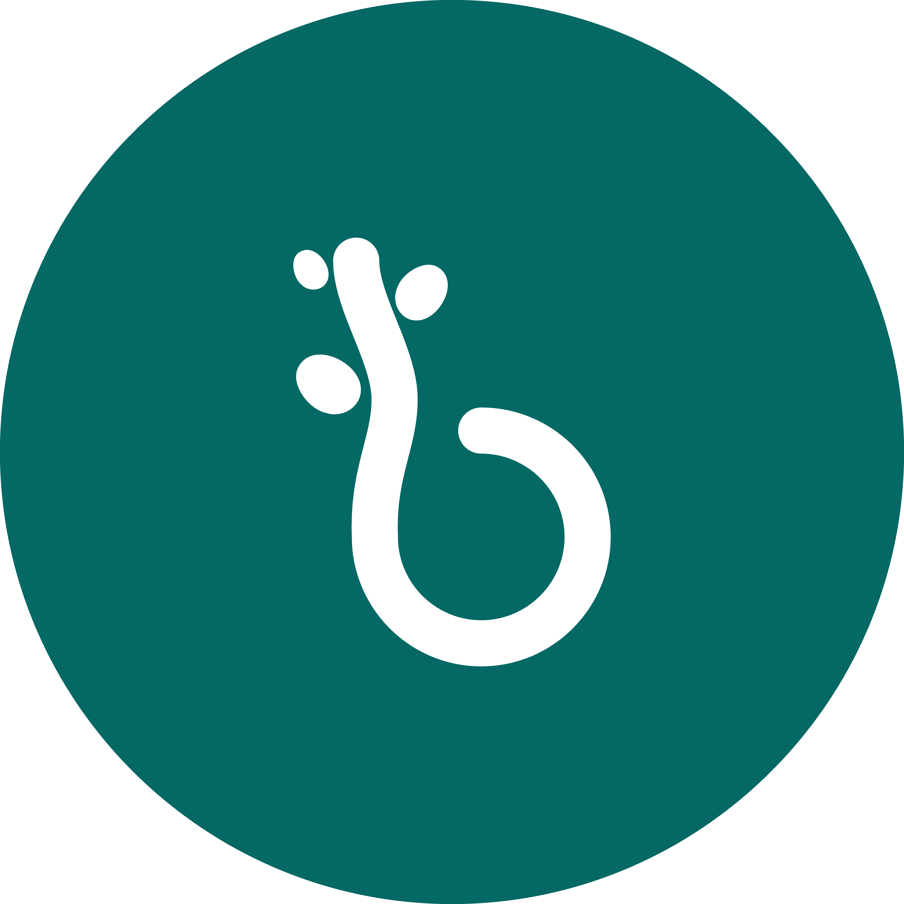
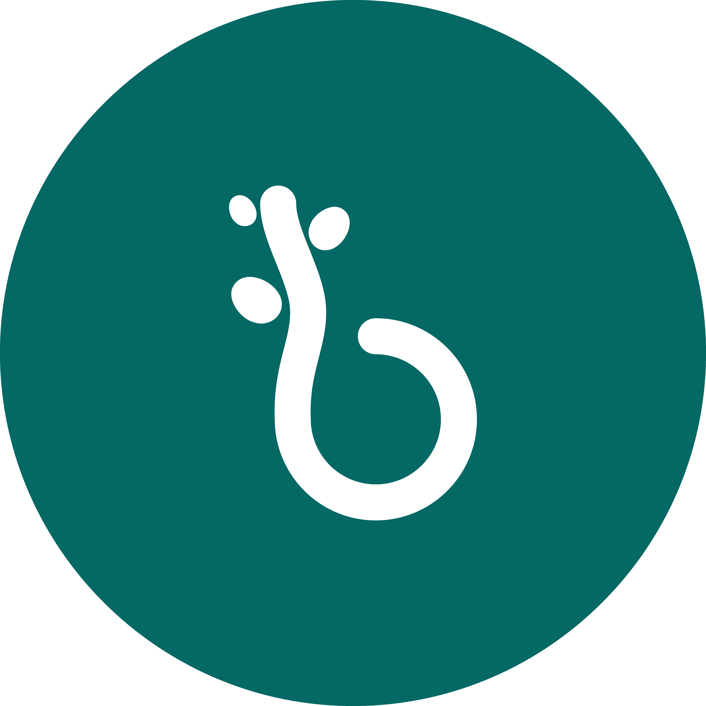

Tastebuds brand design began as corporate identity, known as the Food & Drink Innovation Cluster, before they approached Norwich university's students for assistance on a rebrand. Out of 5 students competing to have their design be the new identity, I was chosen as the winner and asked to continue with their rebranding. Moreover, as a result of the time I put in, they came back to me to offer me a full time internship position for the summer.


Here, you can see my initial route for the company, where I suggested the name sprout, which came from two of the businesses key themes. Number one: Helping the businesses they support to grow. Number two: the association with growing a green, healthy, environmentall concious food industry of food I am proud of regardless of it not being chosen as the direction
This is Tastebuds, the collective for Food and Drink Innovators,
bringing the food and drink industry together, nourishing connection
and cultivating success. When partners work with them, they can
expect to collaborate, innovate and elevate their business
together
The logo is the letter b from buds crafted to look like a bud with
the stem and leaf beginning to break free of its seed, indicating
how tastebuds can help its members grow and flourish, especially in
their early beginnings.


The tastebuds brand comes from a the combination of two words —
taste, referring to the food and drink businesses they work with —
and buds, referring to the growth of the business they support.
Together, these two themes form tastebuds, supporting, innovating
and growing the food and drink industry.
The design for
tastebuds incorporates organic and abstract circular shapes, along
with wave-y lines and fun illustrations. These can be utilised to
form designs used in presentations, social media, and anything else
tastebuds creates.
 





Tastebuds has an active presence on social media, letting their founders and their partners know what is new to tastebuds, events coming up and slient stories. These are essential for the brand who need to keep clear channels to communicate with the businesses they support in order to provide them with the resources they are offering.


Meanwhile, the stories use simple bits of motion that looks like a growing vine, to give some visual flair and keep engagement up.
Check out their page


Tastebuds attends a lot of talks and events, and host a lot of seminars. I used motion to create a beautiful opening transition for their digital seminars. I also created a variety of templates for use in presentations in-person. Finally, I designed a banner for their listings oneventbrite to help their talks stand out
The email signatures for each member of the team continued to demonstrate the brand's design language, and communicated the team's essential information quickly and stylistically. The motion in


The illustrations use the character mascot — the buds — in various silly situations. These illustrations are used in social media posts and on the newsletters, and on the website. However, they are primarily used to add some amusing visuals to otherwise text-heavy areas of the website, with each illustration depicting something that tastebuds can help their clients solve.


Their new website attempts to be friendlier and have a more fun approach to how they talk with their partners.
The website was developed by 101 websites, however I had an input on visual direction and ideas.


I created a variety of mockups and layouts on how it could encorporate the brand's style, which is seen here. The development of these mockups helped to bring the brand elements together to be able to visualise the brand better.
 Take a look at their live website
Take a look at their live website


After months of working with tastebuds, I left them with this styleguide (as well as a variety of templates), that shows how to use the brand elements as clearly as possible, in order for them to continue using the design's effectively.
Working with Tastebuds was a truly life-changing experience. It’s an opportunity I know I'll reflect on throughout my design career, and I am grateful to have had such a fantastic start in the industry, especially right after finishing my second year of university.
I was entrusted with creative control over their brand direction, and together we transformed their identity into a fun, versatile brand system that reflects their current needs. The experience helped me advance my design skills, and I appreciate the team’s confidence in me.
Furthermore, I became more confident in my soft skills, like public speaking and project management. Being in a real design environment gave me valuable insight into the industry and what to expect from clients, which has only made me more excited to continue this journey.
The team was incredibly lovely, supportive, and hard-working; they deserve all their successes and I’m excited to see where Tastebuds goes next.
It’s an amazing feeling to know my design work is out in the world, and I couldn’t have asked for a better team to collaborate with.
A huge thank you to Alex, Charlotte, and Martin for giving me the chance to work with them. I wish Tastebuds all the best for the future!